Études en informatiqueISET Sidi Bouzid
Étudiant en informatique · ISET Sidi Bouzid
Bonjour, je suis Nadhir Jlassi.
Développement web, technologies numériques et apprentissage continu.
Je construis mon parcours entre études, expériences professionnelles et projets personnels. Ce portfolio rassemble les principales expériences qui nourrissent ma curiosité, mon autonomie et mon projet professionnel.
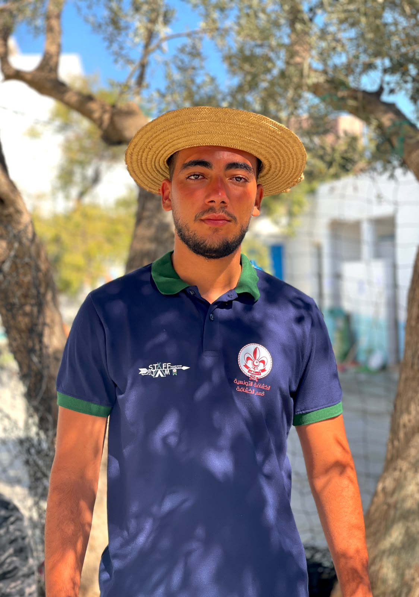
CurieuxToujours en apprentissage
Orienté projetsPratique & progression
Deux stagesDIGIMYTECH · développement web
Création numériqueYouTube · hackathon · freelance
01 / Profil
À propos de moi
Un parcours qui associe apprentissage, expérience de terrain et engagement personnel.
Mon parcours
Je m'appelle Nadhir Jlassi et je suis étudiant en informatique à l'Institut Supérieur des Études Technologiques de Sidi Bouzid (ISET Sidi Bouzid). Je m'intéresse particulièrement au développement web et logiciel, aux réseaux informatiques, à la cybersécurité et aux nouvelles technologies.
Mon parcours repose sur la complémentarité entre les études, les expériences professionnelles et les activités personnelles. Mes stages chez DIGIMYTECH, mon emploi saisonnier au bureau de poste de Lfaja, le développement web freelance et mes projets numériques m'ont permis de découvrir plusieurs environnements.
Ce portfolio présente les étapes principales de ce parcours et ma volonté de continuer à apprendre, à renforcer mes compétences et à contribuer à des projets utiles.
02 / Savoir-faire
Compétences & qualités
Des compétences en évolution, que je continue à renforcer par la pratique et la formation.
Développement web
Conception de pages web, structuration des contenus et attention portée à l'expérience utilisateur.
Informatique & logiciel
Compréhension d'un besoin, recherche de solutions et apprentissage des outils de développement.
Réseaux
Connaissances fondamentales de la communication entre appareils et des équipements réseau.
Cybersécurité
Sensibilisation aux menaces numériques et à la protection des systèmes et des données.
Intelligence artificielle
Intérêt pour les usages actuels de l'IA et ses possibilités dans les projets numériques.
Qualités personnelles
Organisation, autonomie, communication, créativité, esprit d'équipe et volonté d'apprendre.
AutonomieRigueurLeadership
Les indicateurs illustrent les domaines que je développe dans mon parcours ; ils ne représentent pas une évaluation certifiée.
03 / Expérience
Mon parcours professionnel
Des premières expériences de terrain aux stages en développement web.
01
Bureau de poste de Lfaja
Cette expérience m'a permis de découvrir un environnement professionnel différent de celui des études et de mieux comprendre l'importance de l'organisation, de la ponctualité et du respect des consignes dans le travail quotidien.
Compétences développées
- Respect des procédures et sens des responsabilités
- Adaptation à un nouvel environnement de travail
- Organisation, ponctualité et communication professionnelle
- Compréhension de l'importance du service rendu aux usagers
02
Premier stage · DIGIMYTECH
Stage en développement web pour découvrir l'environnement professionnel d'une entreprise informatique et observer l'organisation du travail autour des activités de développement.
Objectifs & apprentissages
- Relier les connaissances acquises pendant les études aux pratiques professionnelles
- Découvrir l'analyse d'un besoin et la préparation des tâches
- Renforcer mon intérêt pour le développement web
- Apprendre par l'observation, la pratique et les échanges avec l'équipe

03
Deuxième stage · DIGIMYTECH
Une seconde expérience dans le développement web pour poursuivre ma découverte du milieu professionnel et consolider les connaissances acquises durant mon parcours académique et mon premier stage.
Continuité & progression
- Consolider mes connaissances en développement web
- Améliorer mon organisation et mon apprentissage autonome
- Comprendre l'importance de la communication dans un projet informatique
- Continuer à construire mon projet professionnel dans le numérique

04 / Projet & innovation
Hackathon — patrimoine tunisien
Quand la technologie devient un moyen de valoriser la culture et l'identité.

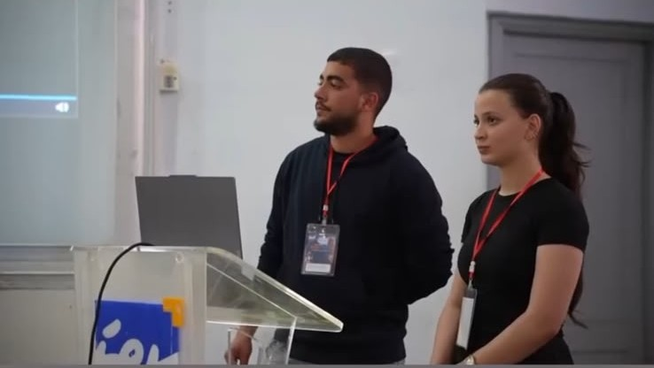
Agrandir la photo ↗
Innovation numérique
Imaginer des solutions pour préserver le patrimoine
J'ai participé à un hackathon consacré à l'utilisation des nouvelles technologies pour préserver et valoriser le patrimoine tunisien. Cette expérience m'a permis de réfléchir à la manière dont les outils numériques peuvent contribuer à transmettre le patrimoine aux nouvelles générations.
Au-delà de la technologie, cette participation m'a appris à considérer le contexte, les besoins des utilisateurs et la collaboration comme des éléments importants dans la conception d'une solution.
01CréativitéImaginer des approches
02CollaborationPartager des idées
03Impact culturelValoriser le patrimoine
05 / Création numérique
YouTube & streaming
Une activité gaming menée durant 2024–2025, autour de la création de contenu et de l'échange avec une communauté.
Activité personnelle · 2024–2025
Créer, présenter et communiquer en ligne
Durant les années 2024 et 2025, j'ai été créateur de contenu gaming sur YouTube et streamer. Cette activité m'a permis d'explorer la création numérique, de partager du contenu autour du gaming et d'interagir avec une communauté en ligne.
Préparer des contenus et des sessions en direct demande de l'organisation, de la constance et une capacité à s'adapter aux réactions du public. Cette expérience a renforcé ma créativité et mon intérêt pour les médias numériques.
Compétences mobilisées
CréativitéCommunicationPrésentationOrganisationAdaptabilité
Statistiques visibles sur la capture
13,6 kvues
316,9 hde visionnage
+396abonnés

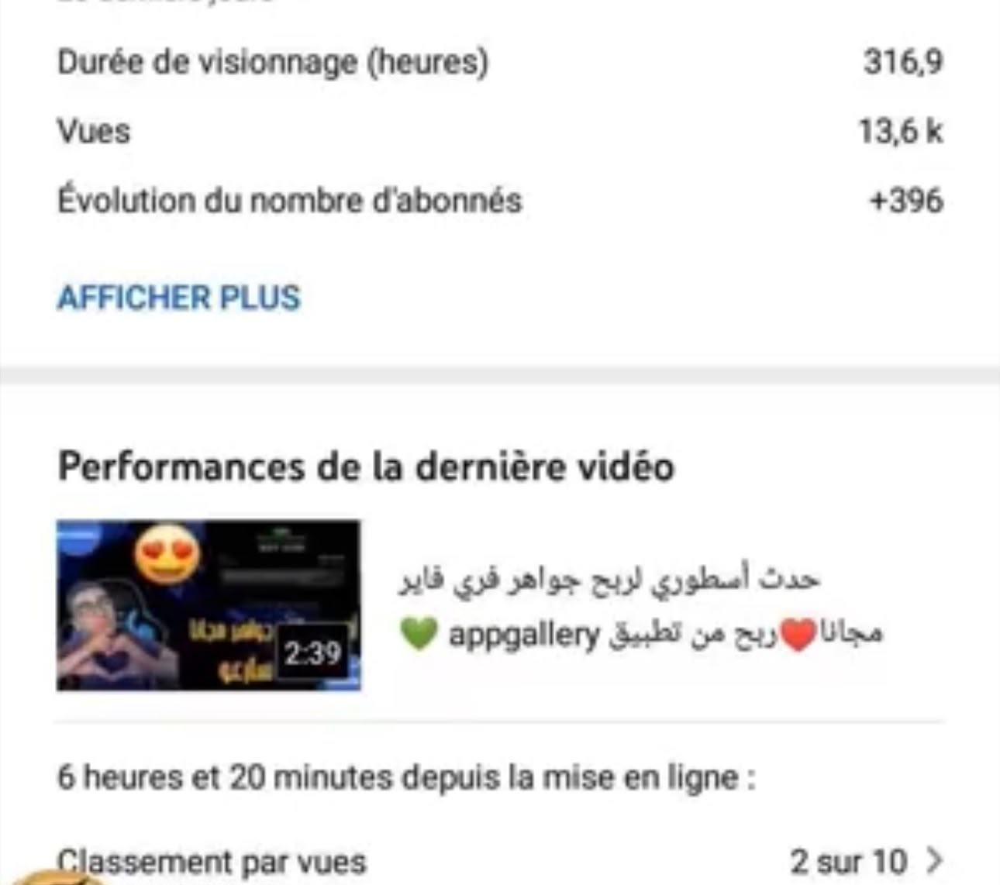
Voir la capture ↗Chiffres repris de la capture fournie dans le portfolio, pas nécessairement des statistiques actuelles.
06 / Engagement
Scoutisme & leadership
Apprendre en groupe, assumer des responsabilités et contribuer à une dynamique collective.
✦
Mon engagement en tant que chef scout
Le scoutisme met en avant l'entraide, la discipline, le respect et le sens des responsabilités. En tant que chef scout, les rassemblements et les camps représentent des occasions de partager des expériences et de développer mes capacités d'organisation, de communication et de collaboration.

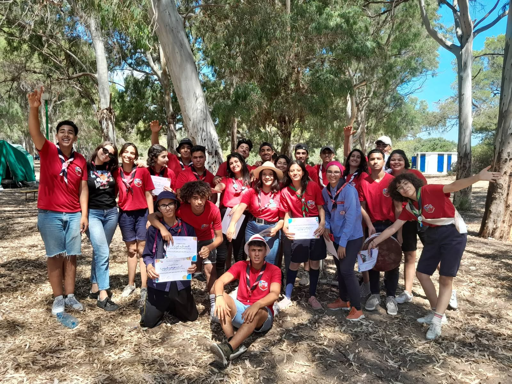
Rassemblement régionalRencontre, échange et esprit collectif
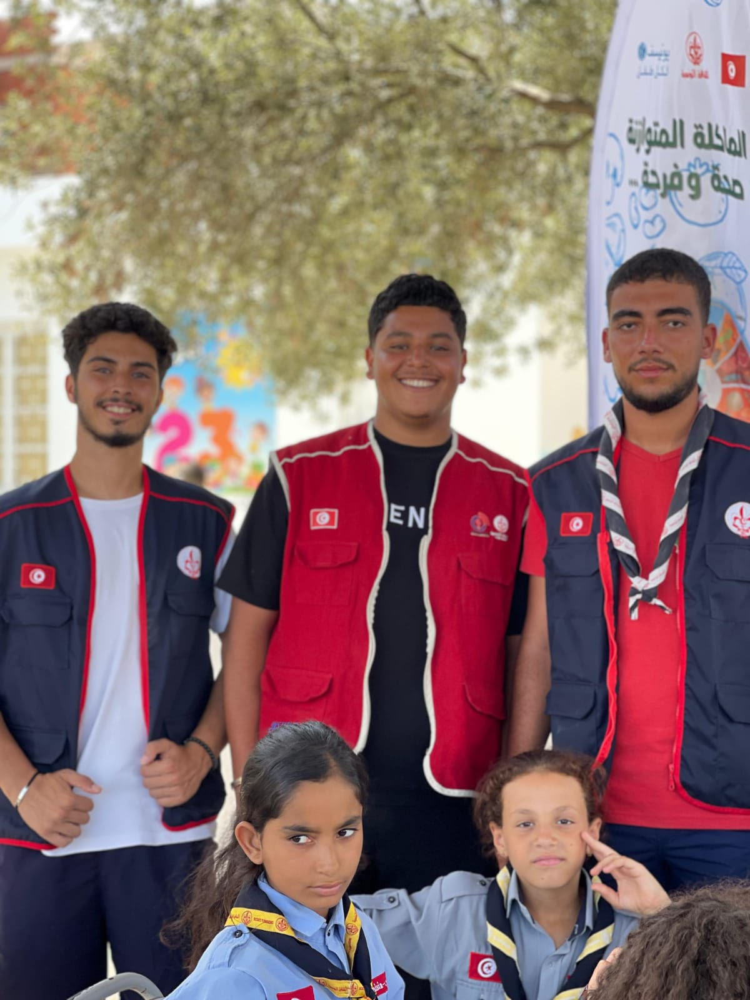
Camp scout d'étéCoopération et vie collective
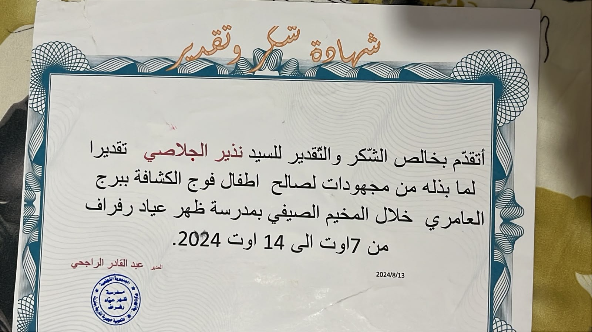
Attestation du campJustificatif de participationSolidaritéResponsabilitéEsprit d'équipeDisciplineLeadership
07 / Formations
Certifications & langues
Des apprentissages complémentaires à mes études en informatique.

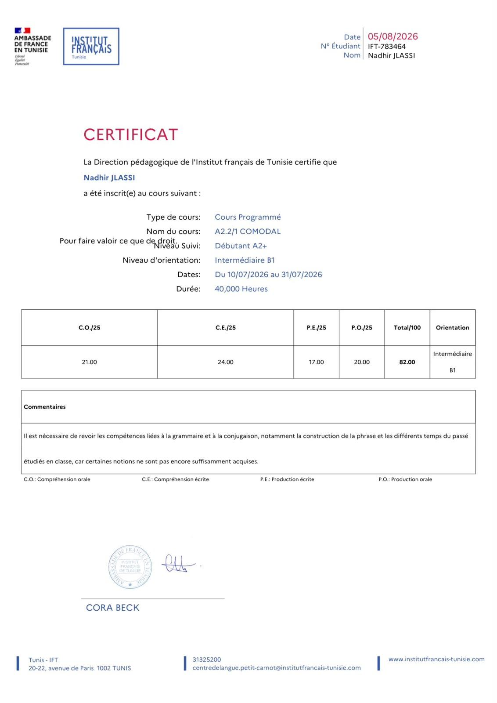
Langue
Français — niveau B1
La maîtrise du français facilite les études, la documentation technique et la communication dans un contexte académique ou professionnel.
Voir l'attestation ↗
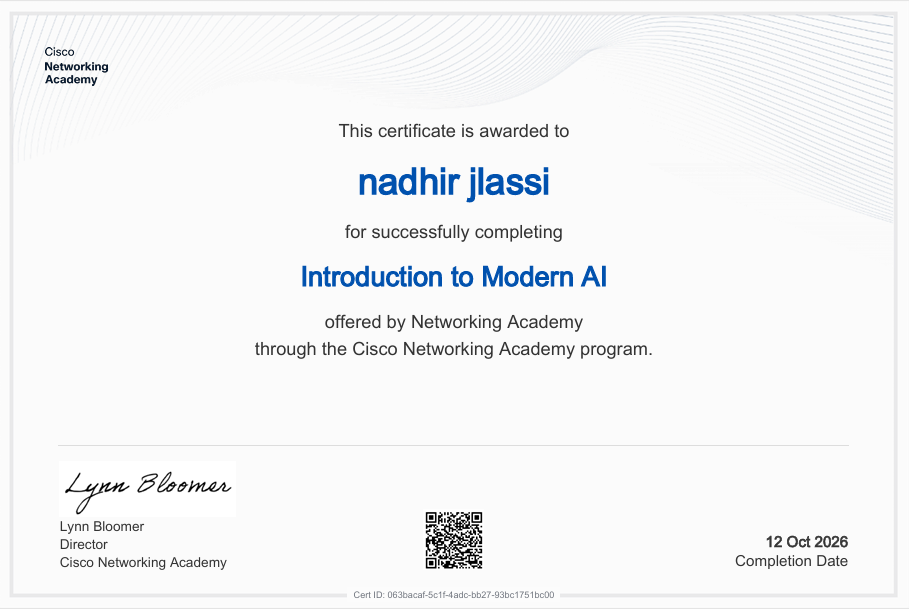
Intelligence artificielle
Introduction to Modern AI
Découverte de concepts liés à l'intelligence artificielle moderne et de ses applications dans l'évolution des technologies numériques.
Voir le certificat ↗
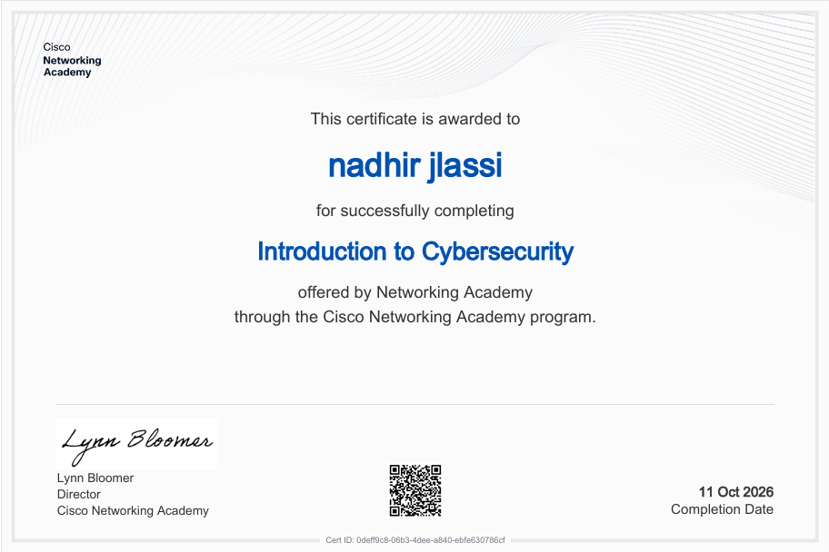
Cisco · Cybersécurité
Introduction to Cybersecurity
Notions de base sur les menaces informatiques et importance de protéger les systèmes et les données numériques.
Voir le certificat ↗
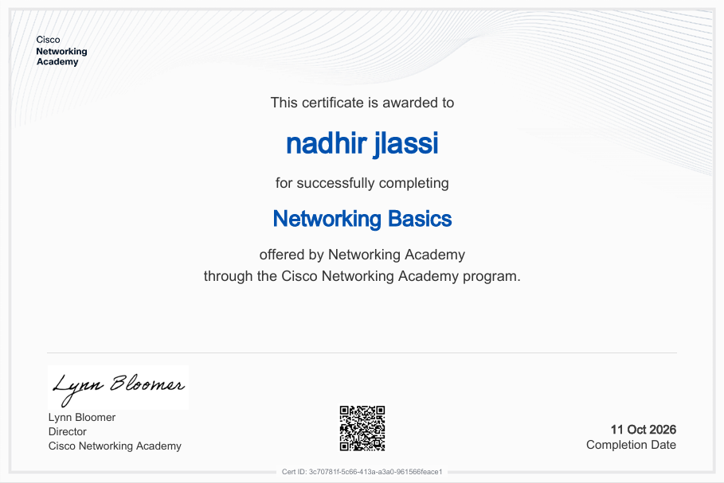
Cisco · Réseaux
Networking Basics
Connaissances fondamentales des réseaux informatiques, de la communication entre appareils et du rôle des équipements réseau.
Voir le certificat ↗08 / Activités indépendantes
Freelance & analyse des marchés
Deux activités personnelles qui m'encouragent à progresser dans des environnements différents.
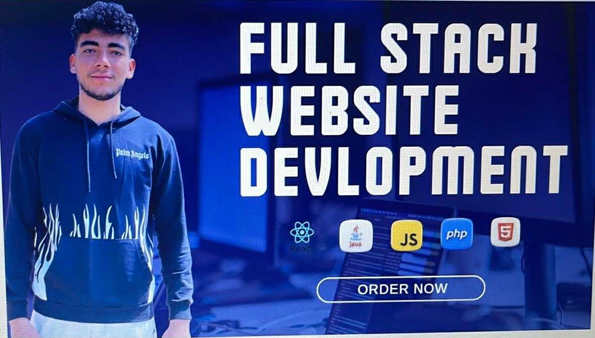
Développement web
Développeur web freelance sur Fiverr
En parallèle de mes études, je travaille comme développeur web freelance sur la plateforme Fiverr. Cette activité me permet de mettre en pratique mes connaissances et de mieux comprendre les attentes liées à la réalisation de projets pour des clients.
Compétences mobilisées
- Organisation des tâches et compréhension du besoin
- Communication professionnelle et écoute du client
- Recherche de solutions et apprentissage autonome
- Attention portée à la qualité des solutions web
Marchés financiers
Intérêt pour le trading sur Binance
Je m'intéresse au trading sur Binance et au suivi des marchés financiers. Cette activité me conduit à observer l'évolution des marchés et à m'intéresser à l'analyse des tendances, tout en restant attentif à l'incertitude et aux risques.
Ce que je développe
- Observation et analyse
- Discipline et patience
- Décision réfléchie
- Attention portée à la gestion des risques
Le trading comporte des risques financiers et ne garantit aucun gain. Une approche prudente et la compréhension des risques sont essentielles.
09 / Pour la suite
Apprendre, créer
et progresser.
Mes stages, mon activité freelance, mes formations, mon engagement scout et mes projets numériques forment un parcours en évolution. Je souhaite continuer à approfondir mes compétences techniques, participer à des projets concrets et acquérir davantage d'expérience dans le domaine de l'informatique.